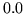
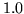

As explained in section 12.1, the word level network is expanded by HNET to create the network of HMM instances needed by the recogniser. The way in which each word is expanded is determined from a dictionary .
A dictionary for use in HTK has a very simple format. Each line consists of a single word pronunciation with format
WORD [ '['OUTSYM']' ] [PRONPROB] P1 P2 P3 P4 ....
where WORD represents the word, followed by the optional
parameters OUTSYM and PRONPROB, where
OUTSYM is the symbol to output when that word is
recognised (which must be enclosed in square brackets, [ and
]) and PRONPROB is the pronunciation probability
( - ). P1, P2, ...is the sequence of
phones or HMMs to be used in recognising that word. The output symbol
and the pronunciation probability are optional. If an output symbol is
not specified, the name of the word itself is output. If a
pronunciation probability is not specified then a default of 1.0 is
assumed. Empty square brackets,
[], can be used to suppress any output when that word is recognised.
For example, a dictionary might contain
bit b ih t
but b ah t
dog [woof] d ao g
cat [meow] k ae t
start [] sil
end [] sil
If any word has more than one pronunciation, then the word has a repeated entry, for example,
the th iy
the th ax
corresponding to the stressed and unstressed forms of the word
``the''.
The pronunciations in a dictionary are normally at the phone level as in the above examples. However, if context-dependent models are wanted, these can be included directly in the dictionary. For example, the Bit-But entries might be written as
bit b+ih b-ih+t ih-t
but b+ah b-ah+t ah-t
In principle, this is never necessary since HNET can perform context
expansion automatically, however, it saves computation to do this
off-line as part of the dictionary construction process. Of course,
this is only possible for word-internal context dependencies.
Cross-word dependencies can only be generated by HNET.
Pronouncing dictionaries are a valuable resource and if produced manually, they can require considerable investment. There are a number of commercial and public domain dictionaries available, however, these will typically have differing formats and will use different phone sets. To assist in the process of dictionary construction, HTK provides a tool called HDMAN which can be used to edit and merge differing source dictionaries to form a single uniform dictionary. The way that HDMAN works is illustrated in Fig. [*].
Each source dictionary file must have one pronunciation per line and the words must be sorted into alphabetical order. The word entries must be valid HTK strings as defined in section 4.6. If an arbitrary character sequence is to be allowed, then the input edit script should have the command IM RAW as its first command.
The basic operation of HDMAN is to scan the input streams and for each new word encountered, copy the entry to the output. In the figure, a word list is also shown. This is optional but if included HDMAN only copies words in the list. Normally, HDMAN copies just the first pronunciation that it finds for any word. Thus, the source dictionaries are usually arranged in order of reliability, possibly preceded by a small dictionary of special word pronunciations. For example, in Fig. [*], the main dictionary might be Src2. Src1 might be a small dictionary containing correct pronunciations for words in Src2 known to have errors in them. Finally, Src3 might be a large poor quality dictionary (for example, it could be generated by a rule-based text-to-phone system) which is included as a last resort source of pronunciations for words not in the main dictionary.
As shown in the figure, HDMAN can apply a set of editing commands to each source dictionary and it can also edit the output stream. The commands available are described in full in the reference section. They operate in a similar way to those in HLED. Each set of commands is written in an edit script with one command per line. Each input edit script has the same name as the corresponding source dictionary but with the extension .ded added. The output edit script is stored in a file called global.ded . The commands provided include replace and delete at the word and phone level, context-sensitive replace and automatic conversions to left biphones, right biphones and word internal triphones.
When HDMAN loads a dictionary it adds word boundary symbols to the start and end of each pronunciation and then deletes them when writing out the new dictionary. The default for these word boundary symbols is # but it can be redefined using the -b option. The reason for this is to allow context-dependent edit commands to take account of word-initial and word-final phone positions. The examples below will illustrate this.
Rather than go through each HDMAN edit command in detail, some examples will illustrate the typical manipulations that can be performed by HDMAN. Firstly, suppose that a dictionary transcribed unstressed ``-ed'' endings as ih0 d but the required dictionary does not mark stress but uses a schwa in such cases, that is, the transformations
ih0 d # -> ax d
ih0 -> ih (otherwise)
are required.
These could be achieved by the following 3 commands
MP axd0 ih0 d #
SP axd0 ax d #
RP ih ih0
The context sensitive replace is achieved by merging all sequences
of ih0 d # and then splitting the result into the sequence
ax d #. The final RP command then unconditionally
replaces all occurrences of ih0 by ih.
As a second similar example, suppose that all examples of ax l
(as in ``bottle'') are to be replaced by the single phone el
provided that the immediately following phone is a non-vowel.
This requires the use of the DC command to define a
context consisting of all non-vowels, then a merge using MP
as above followed by a context-sensitive replace
DC nonv l r w y .... m n ng #
MP axl ax l
CR el * axl nonv
SP axl ax l
the final step converts all non-transformed cases of ax l
back to their original form.
As a final example, a typical output transformation applied via the edit script global.ded will convert all phones to context-dependent form and append a short pause model sp at the end of each pronunciation. The following two commands will do this
TC
AS sp
For example, these commands would convert the dictionary entry
BAT b ah t
into
BAT b+ah b-ah+t ah-t sp
Finally, if the -l option is set, HDMAN will generate a log file containing a summary of the pronunciations used from each source and how many words, if any are missing. It is also possible to give HDMAN a phone list using the -n option. In this case, HDMAN will record how many times each phone was used and also, any phones that appeared in pronunciations but are not in the phone list. This is useful for detecting errors and unexpected phone symbols in the source dictionary.